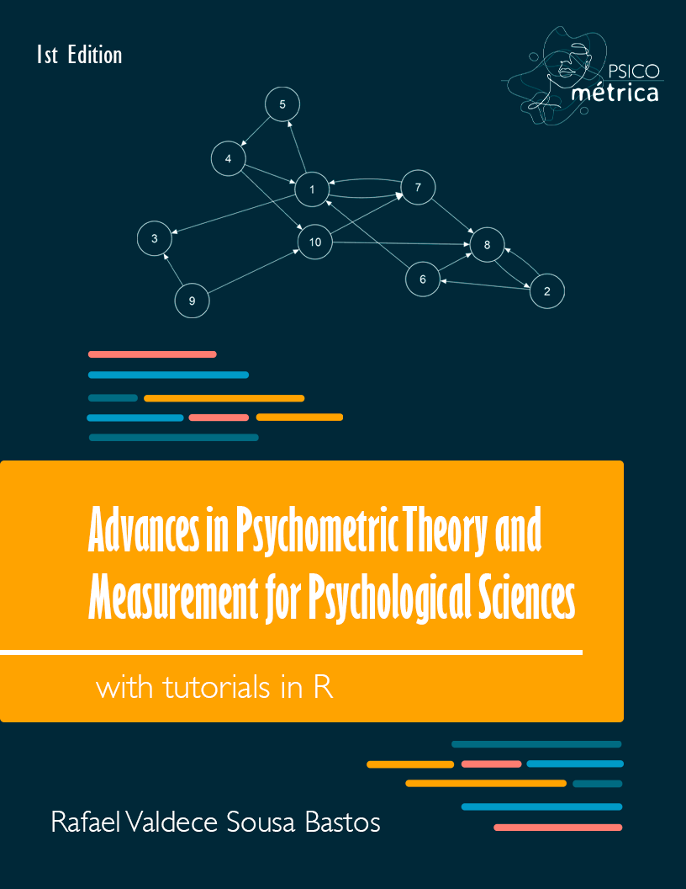

Advances in Psychometric Theory and Measurement for Psychological Sciences
With Tutorials in R
![]()
Overview

Academic discourse and its grammar not only are like a forest that doesn’t allow us to distinguish between individual trees but also go a step further, forcing the researcher to cut the trees down in order to understand the forest. Paul B. Preciado, Countersexual Manifesto
Psychometrics is an area that is growing rapidly worldwide: while many still measure psychological phenomena without having evidence that the measurement has some quality or validity evidence, others continue on the more difficult, but much more precise and scientific, path. The book Advances in Psychometric Theory and Measurement for Psychological Sciences: With Tutorials in R is the first book that makes psychometric science and measurement theory more accessible to you, the reader. Covering classical and modern views on psychometrics, I introduce concepts crucial to understanding psychometrics. This book is aimed at students and teachers who wish to use and understand psychometrics in depth. It’s a great resource for studying alone or for study groups.
In this book I teach the theory behind the concept of the analysis, but I also teach how to run the analysis in the R programming language. We use R because it is free, accessible, and easy to use. I know you’re afraid of using R, but I’ll do everything I can to make sure you understand what you’re going to do in your analyses.
This book is intended to be an educational resource for everyone. The content is written in an accessible way and it is possible to deduce conclusions, without being shallow or wrong.
This book integrates information from my website and my scientific work , in addition to several other works that are at the cutting edge of knowledge. The purpose of this book being online is to make the information more accessible and easier to update in the future.
Suggest Edits and Improvements
If you find any mistakes or have suggestions for improvement, you can submit an issue on the GitHub page of this open educational resource. You can also download a PDF or epub version (click the download button in the menu on the top left). This work is shared under a CC-BY-NC-SA License.
Support my work
Please help keep this book maintained and free for everyone by supporting me through my Ko-fi page.
APA Citation
You can cite this book as:
Bastos, R. V. S. (2024). Advances in Psychometric Theory and Measurement for Psychological Sciences: With Tutorials in R. https://doi.org/10.5281/zenodo.11094831
BibTeX
@book{Bastos2024,
title = "Advances in Psychometric Theory and Measurement
for Psychological Sciences: With Tutorials in R",
author = "Bastos, Rafael V. S.",
publisher = {https://rafavsbastos.quarto.pub/psychometrics/},
year = 2024,
doi = https://doi.org/10.5281/zenodo.11094831,
url = {https://rafavsbastos.quarto.pub/psychometrics/}
}